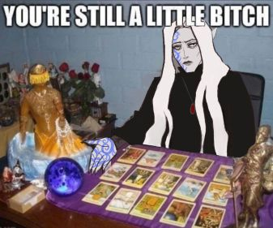

Dematra's Last Stand
Including information about Asriel's family and party surrounding her.

A gaggle of dumbasses, or better known as, the found family trope.
Memnoch
Check him out here!
Trillette
Check him out here!
Izzy
Check him out here!
Arriar
Check him out here!
Xexiax
Check her out here!
Valkyrie
Check her out here!